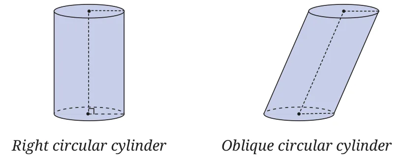
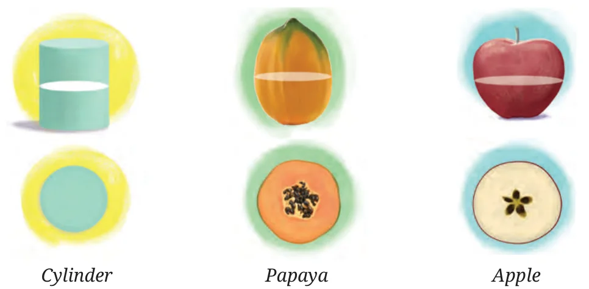
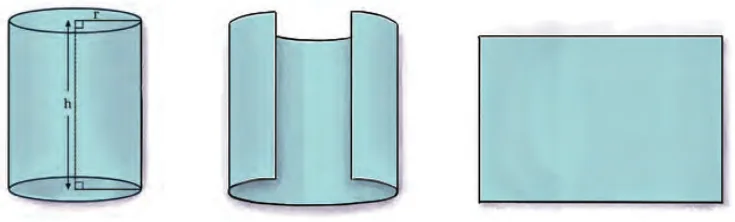
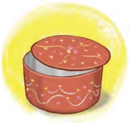
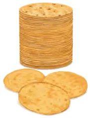
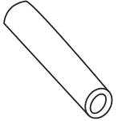

The following figures show different types of cylinders. What is different in each of these cylinders?

The first one is a right circular cylinder. The term circular indicates that the cross-section of the cylinder is a circle, while the term right signifies that the axis of the cylinder is perpendicular to its circular base. Many pipes have this shape. It is worth noting that not all cylinders are of this type. Some cylinders may have axes that are inclined rather than perpendicular to the base. The second one is an oblique circular cylinder. We restrict ourselves to the study of the right circular cylinder only. You can cut out the net of a cylinder given at the end of the textbook, make appropriate folds and join the circles to form the cylinder.
We used the word cross-section above. Given a three-dimensional object, suppose we take an extremely thin slice of it. The shape we get is called a ‘cross-section’ of the object. In the case of a cylinder, if the slice is parallel to its base, we get a circular cross-section. But if the slice is parallel to the axis of the cylinder, we get a rectangular cross-section. Generally, we are interested in the cross-section that is parallel to the base.
Examples of cross-sections are shown in the following figure.

When doctors take an MRI scan of some part of your body, it is like taking a cross-section because it allows them to look at the inside of your body in slices.
What is the area of the curved surface of a cylinder?
Let the radius of the circular base of the cylinder be \(r\); let its height be \(h\). Suppose the cylinder is cut as shown in the figure below. We get a rectangle.

Therefore, the curved surface area of the cylinder is the area of the rectangle.
- The curved surface area (CSA) of the cylinder is
\(\text{CSA} = \text{circumference} \times \text{height} = 2\pi rh.\)

If the cylinder is closed at both ends (top and bottom) like a biscuit tin (see Fig. 14.5B), then the flat circular surfaces at the ends also contribute to the area. Since there are two ends,
\(\text{total surface area (TSA)} = 2\pi rh + 2\pi r^{2}\)
\(= 2\pi r(h + r).\)
- If the cylinder is closed at one end and open at the other end, like a tumbler, then
\(\text{surface area} = 2\pi rh + \pi r^{2} = \pi r(2h + r).\)
- The volume \(V\) of the cylinder is
\(V = \text{cross-sectional area} \times \text{height} = \pi r^{2}h.\)
14.2.1 Another Way of Understanding Why the Above Formulas Are True

To understand why the formulas for the surface area (curved part) and the volume of a cylinder hold, it helps to think of the cylinder as a large number of thin circular khakhras stacked on one another.
Example 2: Savitri had to make a model of a cylindrical kaleidoscope for her science project. She wanted to use chart paper to make the curved surface of the kaleidoscope (see Fig. 14.6). What would be the area of chart paper required by her, if she wanted to make a kaleidoscope of length 25 cm with a 3.5 cm radius? You may take \(\pi = \frac{22}{7}\).

Radius of the base of the cylindrical kaleidoscope (\(r\)) = 3.5 cm.
Height (length) of kaleidoscope (\(h\)) = 25 cm.
Area of chart paper required = curved surface area of the kaleidoscope
\(= 2\pi rh\)
\(= 2 \times \frac{22}{7} \times 3.5 \times 25\ \text{cm}^{2}\)
\(= 550\ \text{cm}^{2}\)